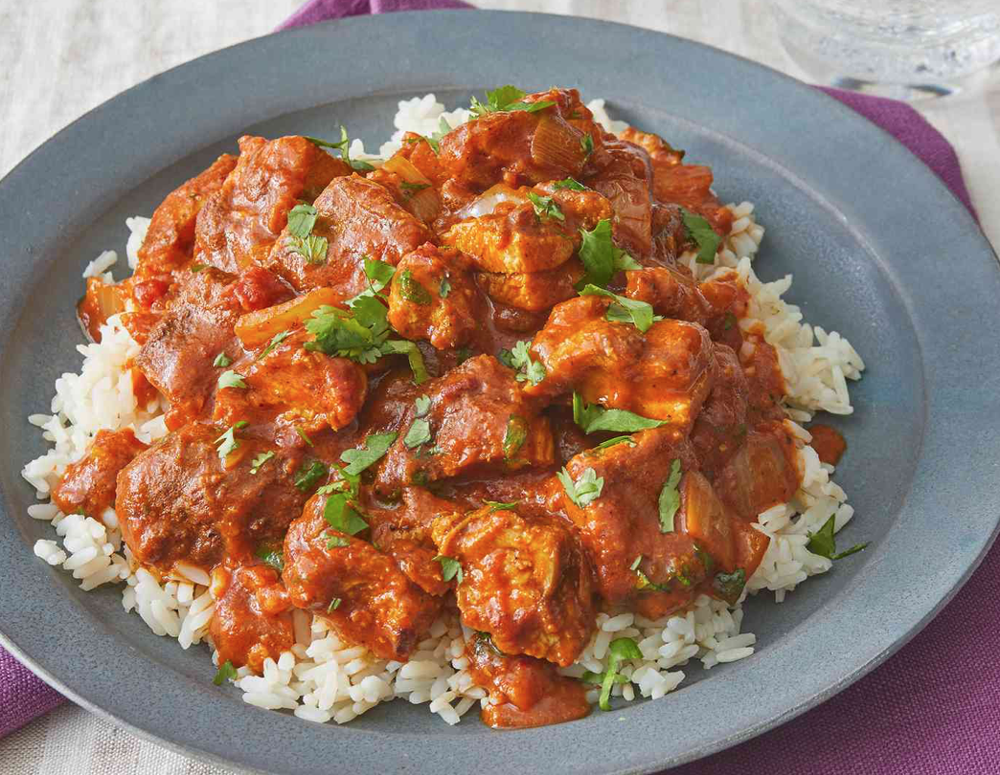

Chicken Tikka Masala

Chicken tikka masala is a popular curried dish made with boneless chicken, ground spices, onions, tomatoes, cream and herbs.
Ingredients
- 4 tbsp vegetable oil
- 25g butter
- 6 tbsp chicken tikka masala paste
- 2 red peppers, deseeded and cut into chunks
- 8 boneless, skinless chicken breasts, cut into 2.5cm cubes
- 2x400g cans chopped tomatoes
- 4 tbsp tomato purée
- 2-3 tbsp mango chutney
- 150ml double cream
- 150ml natural yogurt
- chopped coriander leaves, to serve
Method
- Heat the vegetable oil and butter in a large, lidded, casserole on the hob, then add the onions and a pinch of salt. Cook for 15-20 mins until soft and golden.
- Add the tikka masala paste and peppers, then cook for 5 mins more to cook out the rawness of the spices.
- Add the chicken breasts and stir well to coat in the paste. Cook for 2 mins, then tip in the chopped tomatoes, tomato purée and 200ml water. Cover with a lid and gently simmer for 15 mins, stirring occasionally.
- Remove the lid, stir through the mango chutney, double cream and natural yogurt, then gently warm through. Season to taste, then add chopped coriander and serve with basmati rice and naan bread.